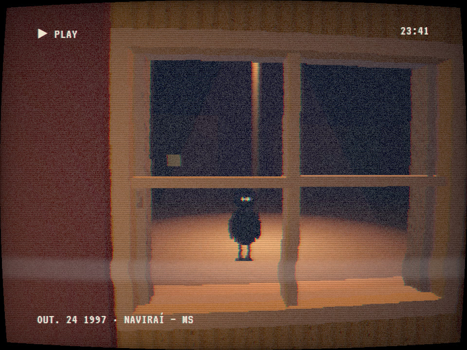
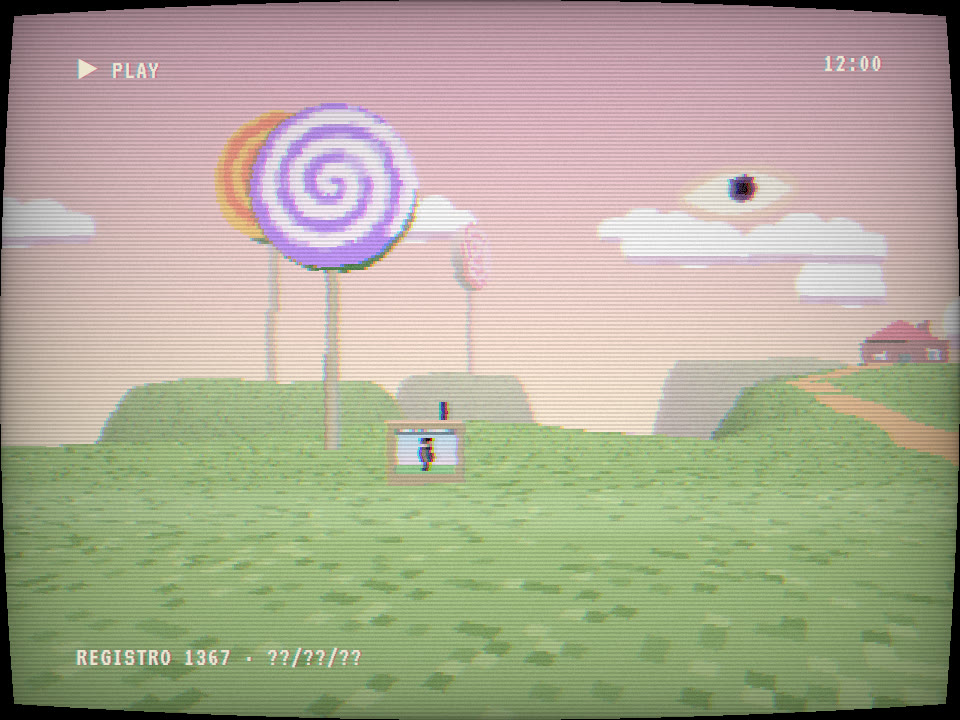

▶ PLAY · ARQUIVO PASSAREX
OUT. 24 1997 · NAVIRAÍ — MS
Registro 1367
O jogo de terror do Passarex: grátis, curto, dreamcore e em primeira pessoa, no estilo PS1 e fita VHS. Já passou da meia-noite. Na estante tem uma fita que você nunca viu. Ele não fala. Só assobia.
Contém sustos repentinos, luzes piscando e sons altos.
Trailer
🚧 O jogo está em ALFA e recebe atualização quase todo dia. Achou um bug? Relate aqui (não precisa saber programar, é só um formulário) que a gente corrige o mais rápido possível.
📼 A mais nova: a v2.7 (feita com o Gustavo) deu um visual novo ao Passarex, trouxe de volta o Douradex de antes e colocou áudios novos. Ver todas as atualizações · segue o @odavyyy1 para saber da próxima.
Atualizações
O que mudou em cada versão. A mais nova fica em cima.
v2.7 · Melhorias e correções (por Gustavo)
- Passarex com visual novo: o desenho de referência do Gustavo virou o Passarex oficial do jogo inteiro. Ele aparece nas fases, na luta, nos sustos, nas skins, nos Portões, na capa e aqui no site.
- O Douradex de antes voltou (o dourado, de óculos e corrente), e agora é o mesmo no navio, nos Portões e nas skins.
- Áudio novo nos Portões do Clubex: ao chegar, “O Clubex me chamou, estou indo Clubex.”
- Toda vez que o Pássaro das Esferas concede um pedido: “PÁSSARO!”
- Lutas: sumiu o quadrado branco que aparecia quando o chefe levava dano. Agora ele mesmo pisca em branco a cada acerto.
- Site com visual novo, com o Passarex animado no fundo.
v2.6 · Correções e jogo mais justo
- Câmera: agora só o V troca (o F5 saiu).
- Inventário pelo teclado: TAB ou I abre e fecha, as setas escolhem, Enter usa.
- Comer o espeto igual no Minecraft: com ele na mão, segure o clique esquerdo.
- F sai dos minijogos (fliperama da Ratabrumga e plantão do Clubex).
- Teclas do Orelha escritas na tela: [C] chama, [1] [2] [3] trocam a marcha, [E] desce.
- Lutas mais fáceis: mais vida pra você, menos pro chefe e mais tempo entre os ataques. A segunda luta ficou bem mais justa.
- Textos e placas muito mais legíveis (lojas, placa de Naviraí, escola, “Só entra quem tem aura”).
- A avenida não acaba mais no vazio atrás de você: lojas novas e um cavalete de OBRAS.
- Na chegada do navio, um bando de Passarex pulando na praia, esperando.
- O Passarex em cima da catedral agora aparece de verdade, e o sino toca mais vezes e mais alto.
- Corrigido: escada do navio ao contrário, telhado torto da casa, TVs da locadora fora da parede, moedas 67 deitadas, boneco torto no supino, placas tortas nos pedestais do Clubex, Douradex com dois desenhos diferentes, menu de Opções maior que a tela e o texto do objetivo por cima dos menus.
v2.5 · O final secreto
- Um final secreto 🤫 Ninguém vai te contar onde fica. Dica: quando o Passarex cai, nem tudo precisa ser café.
- Uma luta nova, com mecânicas próprias (luneta, rede, barris, maré...). Quem é o chefe? Descubra.
- IA do Passarex mais esperta: não dá mais pra ficar escondido atrás dele.
- Catedral refeita igual à de Naviraí.
- Músicas em 8 bits, mais leves, e a música nova da luta: “Derrote o Pássaro”.
- Um alienígena numa bolha na floresta: “Zuprum zuprum carambufa bibilulú”.
- Três conquistas novas, uma delas bem escondida.
- Corrigido: no itch.io, abrir uma fase em CAPÍTULOS dava erro 404.
- Termos de Uso, Privacidade e Avisos; aviso de sustos e luzes piscando na tela inicial; botão pra apagar os seus dados do jogo em Opções.
v2.4 · A festa nos Portões
- Festa nos Portões do Clubex: no final, todo mundo está lá. O elenco do Clubex, o do Arquivo Passarex (Passarex, Douradex, Colombo e Tonho), o Pássaro Cocô e o novo herói Magnific Cerolitos-Man.
- Os Bacanos no jogo: Davy, Luis e Gustavo estão na festa, de braços cruzados.
- Cada personagem avalia a sua partida: tempo de jogo, quantas vezes o Passarex te notou, moedas, segredos, a nota da luta, conquistas, cartazes do Cavalo Capinha e finais. E o Boletim do Clubex junta tudo numa nota geral (S, A, B ou C).
v2.3 · O jogo em inglês (English version)
- Agora em inglês! Escolha ENGLISH na tela inicial ou em Opções → Idioma. Menus, diálogos, legendas, dicas, placas, cartazes, o jornal e a luta: tudo traduzido. As vozes continuam em português, com legenda em inglês.
- Quem abre o jogo com o navegador em outro idioma já começa em inglês.
- Em inglês o jogo se chama INCIDENT 1367. As falas continuam em português (é a essência do jogo), sempre com legenda em inglês, e os sons importantes ganham legenda também ([♪ whistling], [scream]).
- Now in English! Pick ENGLISH on the start screen or in Options → Language. Voices stay in Portuguese, with English subtitles.
- Novo: 7 cartazes de PROCURA-SE do Cavalo Capinha e o show do El Rosengo na praça.
v2.2 · O jornal, o desejo e a luta sem travar
- Corrigido: depois da luta contra o Passarex o jogo podia ficar parado na tela de NOCAUTE ou com o personagem andando sozinho. Agora sai sozinho e solta as teclas.
- A banca de jornal na praça: “PÁSSARO COM ROSTO DE GENTE ASSUSTA NAVIRAÍ”. O padre e o Serjão contam que a cidade está com medo.
- O desejo do Pássaro das Esferas ganhou animação: as esferas brilham, sobe uma coluna de luz, faíscas giram e a goiaba doce vem até você.
- Montou no Orelha, a câmera vai pra 3ª pessoa sozinha (e volta quando você desce).
- Luta no celular com dois joysticks: o da esquerda anda e o da direita mira e atira pra onde você apontar. PULA, DASH, ESPECIAL e TROCA ficam em volta do polegar direito.
- A luta pisca menos: o Passarex só brilha no máximo 3 vezes por segundo quando leva goiabada (melhor pra quem tem fotossensibilidade).
- PROCURA-SE: CAVALO CAPINHA. Sete cartazes espalhados pelo mapa (colinas, avenida, centro e floresta). Ele fugiu! Leia todos pra ganhar uma conquista.
- Show na praça: El Rosengo canta “O Peso de Existir” no coreto, com os Acerolitos no violão, na guitarra e no piano, caixas de som e luzes. De longe não se ouve; chegando perto, o som aumenta.
- O sino da catedral toca de vez em quando na praça (2 a 4 badaladas, mais alto perto da igreja).
- Correr ficou mais evidente: a câmera balança, inclina e abre um pouco; o boneco em 3ª pessoa dá passos maiores.
v2.1 · Crie o seu personagem
- Crie o seu personagem no começo do jogo: menino ou menina, cor da pele e cor do cabelo (dá pra mudar depois em Skins).
- 3ª pessoa com animação: o boneco anda com passinhos e balanço, sem flutuar, e fica sempre no meio da tela (por trás e de frente).
- Na 3ª pessoa você aparece montado no Orelha ou em cima do patinete.
- O Douradex não repete tanto: só fala quando o rumo muda.
- O grito gravado agora é só do Passarex; os outros sustos (Plantão no Clubex, o especial da luta) têm um piscar ou um grito diferente a cada vez.
- Corrigido: o espetão comprado do Serjão às vezes ficava invisível na mão.
- Portais novos pra floresta e de volta pro centro: anel brilhando, redemoinho e um feixe de luz que dá pra ver de longe.
- Chamar o Orelha (C ou 🐕) faz ele aparecer logo atrás de você.
- Celular: os botões CHAMAR e MARCHA não ficam mais um em cima do outro.
- Dá pra ler a placa da academia e o ♥IFMS NV (o portão verde tampava as letras).
v2.0 · Inventário, academia e o memorial da Rosinha
- Inventário (I ou Tab no PC, 🎒 no celular): o espeto do Serjão dá pra comer ou segurar.
- O ESPETÃO do Serjão: compra com 5 moedas e carrega na mão (aparece até na 3ª pessoa).
- Academia Corpoleo Saudável na praça, aberta: faz supino e agachamento, em 3ª pessoa. Não ganha nada, é só pela saúde.
- Memorial da Rosinha na catedral: a garrafinha d’água rosa do Guilherme, quebrada. Em memória.
- Créditos no final: feito por oDavyy e Os Bacanos, com o Passarex, e um tira-dúvidas explicando por que cada coisa está no jogo (também numa placa nos Portões).
- Versão ALFA e botão 🐞 Relatar um bug no menu Extras, no final do jogo e aqui na página.
- No PC, as escolhas agora aceitam as teclas 1 a 9.
v1.9 · Tutoriais, câmera F5 e mais sustos
- Tutoriais: o básico na primeira vez, um pra cada capítulo novo (navio, salas amarelas, avenida, centro) e a tela de controles antes da luta. O objetivo de cada parte fica sempre no canto da tela.
- Câmera estilo F5: 1ª pessoa, 3ª por trás (sobre o ombro, você de costas) e 3ª de frente pra ver a sua skin. F5 ou V no PC, 👁 no celular.
- Controles da luta mais fáceis: Espaço pula, segurar o clique atira, Shift desvia, clique direito (ou E) solta o especial e Q ou a rodinha troca a goiaba.
- Cada capítulo abre com o título e uma narração contando a história do Passarex e do Clubex.
- Mais sustos: ele aparece atrás de você e some quando você vira, fica parado lá na frente te encarando, e às vezes a tela “pisca” com ele.
- Navio: espuma no casco, respingo na proa, coisas boiando, gaivotas, nuvens e o barco balançando. As moedas agora ficam boiando no mar, no caminho da ilha.
- Céus: lua, estrelas e nuvens no centro e na avenida; céu vermelho com fumaça depois da luta.
- Plantão no Clubex: o Homem-Distinto liga explicando a primeira noite, tem ventilador, luz falhando, chiado na troca de câmera e confete às 6h.
- Menos moedas e preços menores nas skins e roupas.
v1.8 · Capítulos, o Orelha de verdade e o helicóptero
23 de novembro de 2026
- 12 capítulos bem separados, com o centro dividido em quatro partes. No menu CAPÍTULOS dá pra voltar em qualquer um que você já alcançou e ver quantas 🪙 moedas e ★ segredos faltam em cada um, sem mexer no save.
- Menu mais simples: Continuar, Novo jogo, Capítulos, Extras (conquistas, skins, rádio, créditos, trailer), Opções e Como jogar.
- Cachorro Orelha: agora você vê as costas e as orelhas dele quando monta, com 3 marchas ([1] [2] [3]). Quando você desce, ele sai passeando; dá pra chamar ([C] ou o botão 🐕) e fazer carinho.
- Um helicóptero vazio passa engasgando sobre a avenida e cai atrás dos prédios.
- Fiéis nos bancos da catedral, que viram a cabeça e ficam te olhando.
- A música abaixa durante as conversas.
- Correções: o chão em camadas que piscava, as faixas brancas no céu da avenida e as legendas que ficavam atrás do Orelha.
v1.7 · Os Portões do Clubex
23 de novembro de 2026 · o jogo ganhou um final no céu, conquistas, moedas e skins
- Os Portões do Clubex: depois do final, um hino sobe pro céu e você chega nos portões. O Homem-Distinto te recebe (“Eu sei.”), explica as regras da Confraria e abre os portões. Lá dentro, o salão dos segredos: o elenco em pedestais, cada um com a sua história, o monumento do 67, a placa dos Bacanos e a jukebox.
- A floresta de cogumelos: o Mago, o Macaco, o Pássaro das Esferas e o Pássaro Cocô agora moram numa floresta igual à do curta em stop motion (trilha no leste da praça). Conversas novas contando a história.
- Conversas com caixa de diálogo pelo jogo todo, pra entender a história do Passarex e do Clubex.
- O Serjão voltou: está na frente do espetinho dele, na avenida, assando. Peça um espeto (só se pedir!).
- O padre na catedral: você pode conversar, pedir pra comungar (ele pergunta se você é católico, se se confessou e se guardou o jejum) ou receber uma bênção. Feito com todo o respeito.
- Fliperama na Pobresa: PEGA A RATABRUMGA! Corra com o Acerolito ou o El Rosengo atrás da rata que roubou o boné.
- Moedas 🪙 espalhadas por todas as fases, 19 conquistas 🏆 e skins e roupas: personagens do Clubex liberados ao zerar, e roupas (mini cartola, boné Douradex, capa, corrente, uper fléguis, auréola) pra comprar com moedas.
- Câmera em 3ª pessoa (nas opções ou tecla V), pra ver a sua skin. A skin também aparece na luta.
- A rádio agora toca “Portões Abertos do Clubex”, do oDavyyy.
- Correção: o letreiro do IF aparecia espelhado.
v1.6 · A luta caprichada, a catedral e o patinete
23 de novembro de 2026
- Luta contra o Passarex bem mais completa: agora ele dá bicadas esticando o pescoço, solta leque de penas, manda passarinhos, e na última fase se envolve nas asas e vira um redemoinho. São 3 fases, com aviso de cada ataque.
- Especial: acertar e fazer parry nas penas rosas enche as cartas. Uma carta solta a Goiaba EX; cinco soltam a SUPER GOIABADA. Goiabas douradas caem do céu e devolvem vida. No fim, a nota da luta (tempo, vida, parry e super).
- Catedral entrável, com bancos, vitrais, o altar, a cruz e o sacrário com a lamparina acesa. Feita com todo o respeito: lá dentro não tem susto nem Passarex, e até o relógio do pós-luta para.
- Patinete elétrico e montar no Cachorro Orelha pra atravessar o centro mais rápido.
- IF mais detalhado: alas laterais, janelas, marquise, mastros com as bandeiras do Brasil, do MS e do IFMS, bicicletário e portaria.
- A conveniência agora se chama Pobresa.
- Correção: texturas que piscavam (apareciam e sumiam) em várias fases.
v1.5 · Repetir fases e Rádio Clubex FM
23 de novembro de 2026
- Menu FASES: toda fase que você termina fica liberada pra jogar de novo, quando quiser. Repetir não mexe no seu save.
- Rádio Clubex FM com as músicas do Suno, pelo player do próprio Suno: no menu principal, na pausa ou no rádio da Pobresa. A música continua tocando enquanto você joga. Primeira faixa: “O Davy escorregou”, do oDavyyy.
v1.4 · O centro de Naviraí e a luta
23 de novembro de 2026
- Nova fase: o centro de Naviraí, com três lugares de verdade: a praça redonda com o coreto e a catedral, a Pobresa Conveniência (dá pra entrar) e o IFMS Campus Naviraí. O Passarex está escondido nos três.
- Missão do Mago e do Macaco: consiga as goiabas doces com o Pássaro das Esferas (ele só concede se você pedir) e as azedas com o Pássaro Cocô (ele quer um refri gelado da Pobresa). O Macaco monta as máquinas de atirar goiaba.
- Luta contra o Passarex em 2D, no estilo dos desenhos antigos: chuva de penas, rajadas, ondas de fiu fiu, mergulhos e penas teleguiadas. Goiaba doce atira rápido, a azeda bate forte.
- Depois da luta: a cidade fica destruída e ele nocauteado na praça. Pegue o café de Naviraí na Pobresa e leve pra polícia fazer o soro antes que ele acorde.
- Rádio Clubex FM na Pobresa. As músicas do Suno chegam na próxima atualização.
- Vozes novas para o Mago, o Macaco, o Pássaro Cocô, o Pássaro das Esferas, a policial e o narrador.
v1.3 · 1491 e o Plantão no Clubex
23 de novembro de 2026
- Nova fase: Registro 1491. A fita pula para um navio no meio do oceano. O Douradex aponta (“É por ali, confia!”), o Colombo duvida e o Tonho te entrega o leme. Siga o fiu fiu do Passarex, lá no alto do mastro, e descubra as Américas um ano antes de Colombo.
- Nova fase: a sala branca. Uma sala toda branca com um computador ligado. Nele, um joguinho curto: Plantão no Clubex. Vigie as portas e as câmeras do QG de meia-noite às 6h, com o Acerolito, a Ratabrumga e o El Rosengo rondando.
- 12 segredos do Clubex escondidos pelo jogo: quadros, uma fita, um tênis brilhando, um barril de Acerolândia e mais. A tela final mostra quantos você achou.
- Vozes novas para o Douradex, o Colombo, o Tonho e o narrador.
v1.2 · A avenida e os finais
23 de novembro de 2026
- Nova fase: a avenida de Naviraí. Lojas fechadas, postes, a locadora com TVs na vitrine e a sua casa no fim da rua. Fim de tarde ou quase meia-noite, conforme a porta escolhida na sala de brincar.
- Um orelhão que toca. Do outro lado da linha, uma voz conhecida.
- A página de colorir. Uma folhinha de verdade na escola, para pintar com o mouse ou com o dedo. Pense bem antes de pintar os olhos.
- Os três finais: Fita ejetada, Conexão perdida e o secreto, Registro 1368. A tela final mostra quantos você já encontrou.
- Agora são 3 pistas para achar.
- 12 vozes novas do Passarex e do narrador.
- Ele agora aparece debaixo dos postes, sempre um pouco à frente.
- Correção: a tela não fica mais com falha depois da porta vermelha.
v1.1 · Menu, opções e trilha sonora
23 de novembro de 2026
- Menu principal novo: Continuar (mostra onde você parou), Novo jogo, Opções, Como jogar, Créditos e o trailer.
- Opções: volume geral, volume da música, música do menu ligada ou desligada, legendas das vozes, sensibilidade da câmera e tela cheia. Elas ficam salvas no navegador.
- Pausa com botões: Continuar, Opções e Menu principal.
- Sons enviados pelo oDavyy: o “fiu fiu”, o grito dos sustos, a música do menu e a trilha sonora, que agora toca em loop o jogo inteiro.
- No celular, botões grandes para escolher as falas.
- Link do trailer no menu, na pausa e no fim.
- Correção: os textos tortos que apareciam no começo.
v1.0 · Lançamento
22 de novembro de 2026
- A sala de casa, as colinas, as salas amarelas e a sala de brincar.
- Vozes do Passarex e do narrador, sustos, falhas de tela e a fuga nas salas amarelas.
- Dica com o passarinho guia (tecla H).
- Funciona no PC e no celular.
- Save automático: ao morrer ou fechar o jogo, você volta do último lugar.
O que é
Registro 1367 é um protótipo de jogo do Arquivo Passarex, inspirado na lore d’Os Bacanos: o Passarex, o pássaro com cabeça de gente que aparece parado ao longe em Naviraí e só assobia. Você assiste a uma fita velha do “Canal dos Passarinhos” e é puxado para dentro dela.
Lá dentro tem colinas de sonho com uma casinha rosa, salas amarelas que não terminam, uma sala de brincar com oito portas um navio em 1491 com o Douradex, uma sala toda branca com um computador a avenida de Naviraí, com uma escola e uma folhinha para pintar, e o centro da cidade com a praça, a Pobresa e o IF. Tem escolhas que mudam o quanto ele te notou, pistas escondidas, uma fuga e alguns sustos.
O universo
Quer saber quem é quem antes de jogar? Quem é o Passarex, o pássaro do fiu fiu, e o que é o Clubex, com os Portões, o Homem-Distinto, os Acerolitos, El Rosengo, o Orelha e o resto do elenco d’Os Bacanos. In English: Incident 1367.
Prints
deslize para o lado →




Como a gente fez
O jogo foi feito por oDavyy conversando com o Claude Code, o agente de programação da Anthropic, numa mesma tarde. O Davy dava a direção (referências, clima, o que estava bom ou não) e o Claude planejava, programava, testava no navegador e ajustava. O código do jogo não está publicado aqui. Esta página só conta o processo.
- Primeiro o plano. Antes de programar, fizemos um plano curto: duração, quem é o jogador, quantos finais, quais lugares e uma lista de etapas pequenas para testar o clima cedo.
- Visual de PS1 e fita VHS. É um jogo 3D que roda no navegador. A imagem é desenhada em 320×240 e ampliada, os vértices “tremem” como no PlayStation 1, tem névoa, e por cima vai um filtro de TV de tubo: tela curva, linhas, ruído, cor vazando e a faixa de tracking.
- O Passarex continua sendo o desenho da série. Em vez de virar um boneco 3D diferente, o desenho 2D original vira uma figurinha recortada dentro do mundo 3D, sempre virada para você. Colorido nos lugares de sonho, em silhueta com os olhos acesos no escuro.
- Lugares de sonho. A sala de casa de 1997, colinas em forma de mesa ligadas por uma crista (com um olho no lugar do sol), salas amarelas no estilo backrooms montadas como labirinto, uma sala de brincar com nuvens, mezanino, bolinhas que dá para chutar e arco-íris, e a avenida de Naviraí com uma escola e uma folhinha de verdade para pintar.
- Vozes geradas no próprio PC. As falas foram geradas no VoiceStudio local. O Passarex tem voz mais aguda, de criança, passada por um filtro de rádio com engasgos, quedas de sinal e chiado. O narrador do “Arquivo” tem cara de fita velha.
- Som feito na hora. A caixinha de música desafinada, o zumbido das lâmpadas, o telefone, o vento, os passos e o “fiu fiu” são sintetizados pelo navegador enquanto você joga. Por cima, os sons enviados pelo próprio oDavyy: o “fiu fiu”, o grito dos sustos, a música do menu e a trilha sonora.
- Sustos e uma fuga leve. Alguns quadros rápidos do rosto, falhas de tela com texto e uma fuga nas salas amarelas: ele vem atrás de você, mais devagar que você. Se te pegar, aparece “SINAL PERDIDO” e você volta de onde a fuga começou.
- Nunca fica perdido. O botão de dica mostra o que fazer e solta um passarinho amarelo que voa mostrando o caminho e espera por você.
- Celular e publicação. Joystick na tela, arrastar para olhar, botões grandes e tela cheia na horizontal. O jogo inteiro tem uns 9 MB e foi publicado no itch.io.
Finais possíveis
O que você faz durante a fita conta. Um contador escondido, “ele te notou”, sobe quando você atende o telefone, encara o vulto, responde à TV, abre a porta errada ou pinta os olhos dele. Junto com as 3 pistas e as 3 penas que você acha, ele decide como a fita termina.
Ver os finais (spoiler)
O caminho
- A porta da sala de brincar define como vai estar Naviraí: fim de tarde (praia, escada ou campo) ou quase meia-noite (navio, rua ou quarto). A porta vermelha não deixa passar, e uma delas só dá numa parede.
- Na avenida, um orelhão toca. A folhinha de colorir está na mesa da professora, na escola. Pintar os olhos dele conta como ele te notar.
- No centro, depois da luta e do soro, você finalmente volta pra casa. A fita termina lá, e depois do final um hino te leva até os Portões do Clubex.
- As pistas: o recorte de jornal na gaveta da sala, a página do diário no navio e a folhinha da escola. As penas ficam nas salas amarelas.
Os três finais
- A · Fita ejetada. O final mais comum. Você acorda no sofá, a fita sai sozinha do videocassete e, lá longe, um “fiu fiu”.
- B · Conexão perdida. Ele te notou 3 vezes ou mais. A luz apaga e ele aparece parado na sua frente, dentro de casa.
- C · Registro 1368 (secreto). As 3 pistas, as 3 penas e no máximo 1 vez notado. A câmera agora está do lado de fora da sua janela.
A tela final mostra quantos dos três finais você já encontrou.
Save
O jogo salva sozinho a cada lugar novo, a cada pista e a cada pena (aparece ● SALVO no canto). Se você fechar, na próxima vez dá para continuar de onde parou. Se ele te pegar na fuga, você volta do ponto onde ela começou. O save fica só no seu navegador.
Créditos e direitos
Passarex, o Arquivo Passarex, os personagens e toda a lore pertencem a Os Bacanos. Todos os direitos reservados. Este jogo é um projeto de fã inspirado no universo deles, sem fins lucrativos.
Feito por: oDavyy, com Claude Code.
Veja também: Passarex · Fiu Fiu, 1491 · Elenco do Clubex · @os_bacanos67
Contém sustos repentinos, luzes piscando e sons altos.